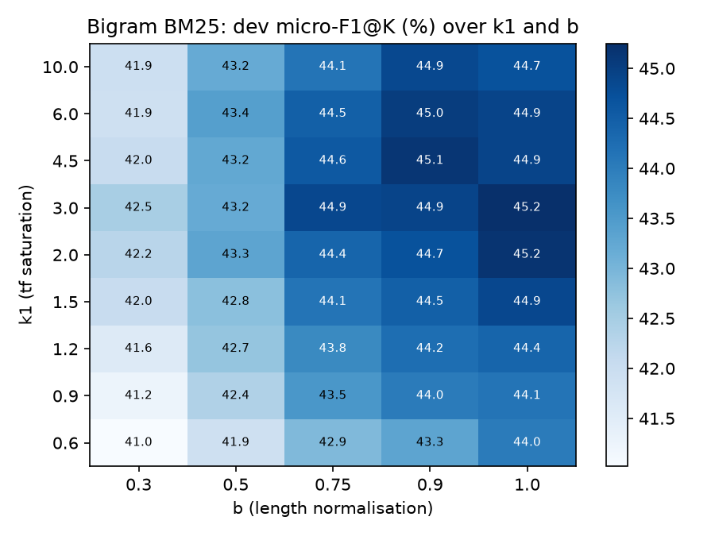
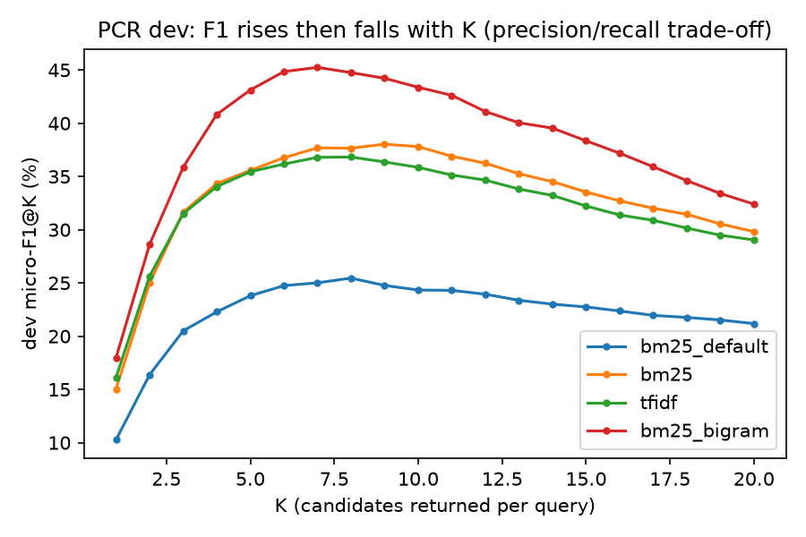
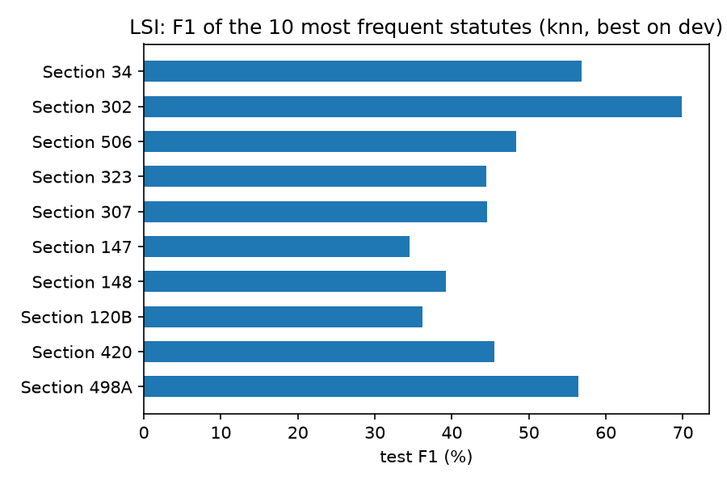
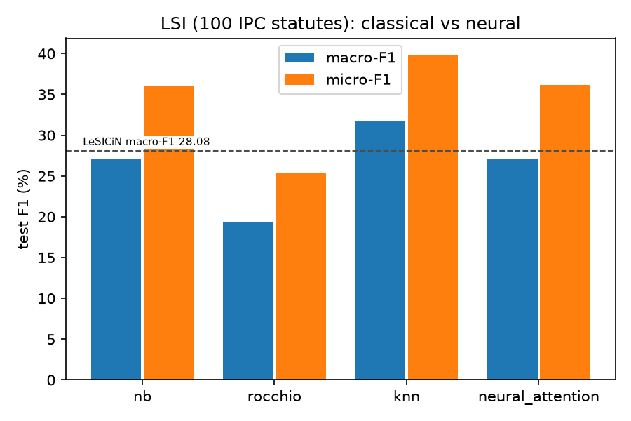

Precedent and Statute Retrieval for Indian Court Judgments using Link Analysis and Distilled Neural Models
CSD358 Information Retrieval | Course Project | Shiv Nadar University
| Name | Roll No. |
|---|---|
| Devansh Pandey | 2310110461 |
| Anamika Pal | 2310110037 |
| Abhinav Bachchas | 2310110383 |
Code: github.com/devansh101005/CaseTrail
Abstract
When a lawyer in India works on a new case, two questions come up again and again: which earlier judgments are similar, and which sections of law apply. Today this is mostly done with keyword search and a lot of manual reading. We built CaseTrail, a system that answers both questions for Indian Supreme Court judgments and shows why each answer was given. We used the IL-TUR benchmark with its Prior Case Retrieval (PCR) and Legal Statute Identification (LSI) tasks, and wrote the classical IR parts ourselves: the inverted index, BM25, tf-idf, PageRank, HITS, Naive Bayes, Rocchio, kNN and all evaluation metrics. On top of these we trained a chunk-based neural encoder with BM25 hard negatives, tried cross-encoder distillation, and built a web demo. Every setting was tuned on the dev split, and the test split was scored only once per system. On PCR, a tuned BM25 with word bigrams reached a test micro-F1@K of 42.43, against 39.15 for the best published system, and fusing it with our fine-tuned e5 encoder raised this to 43.43. On LSI, our kNN classifier reached a test macro-F1 of 31.73, against 28.08 for the published LeSICiN model. Two findings surprised us: some case citations are left unmasked in the data and give away 14 to 17 percent of the answers, and none of our link analysis signals helped once bigrams were used. Our cross-encoder teacher never learned from random chunk pairs, so distillation gave no gain.
Indian courts produce a very large number of judgments every year, and a single Supreme Court judgment can easily run to several thousand words. A lawyer preparing a case has to find earlier judgments on similar facts (precedents), because courts are expected to follow them, and has to work out which sections of law, for example of the Indian Penal Code (IPC), apply to the facts. Both jobs are slow when done by hand.
The usual tools are keyword search engines such as Indian Kanoon. Keyword search works when the lawyer already knows the right words, but it has two problems with judgments. The same facts can be written in very different words ("harassment for dowry" and "demand of money from the bride's family" describe the same thing). And a whole judgment is far too long to type in as a query, so the lawyer has to guess which few words matter.
This is what made the topic interesting to us. It is a real retrieval problem with long documents, a benchmark with judged answers, and a clear use: a tool that suggests precedents and statutes can save a junior advocate or a legal aid worker hours of reading. We also wanted to see how far the classical methods from our course go on such data before adding neural models, and whether link analysis (PageRank and HITS), which works so well on the web, helps on legal text.
Our main contributions are:
Benchmarks for Indian legal text. Joshi et al. (2024) introduced IL-TUR, a benchmark of eight tasks on Indian legal documents with fixed splits and baselines for each task. We use two of them. For Prior Case Retrieval the dataset comes from the earlier U-CREAT paper (Joshi et al., 2023), which also defines the evaluation: micro-averaged F1 over the top K results of every query, with K picked on the validation set. U-CREAT represents each judgment by the events it describes and runs BM25 over those events; its best version reaches 39.15 micro-F1@K, while plain word-level BM25 reaches only 13.85 in their tables. For statute identification the strongest published model on IL-TUR is LeSICiN (Paul et al., 2022), a heterogeneous graph model that links judgments, statutes and their texts, with 28.08 macro-F1.
Classical retrieval. BM25 comes from the probabilistic relevance framework described by Robertson and Zaragoza (2009). It adds term frequency saturation and document length normalisation to tf-idf, which matters a lot for long documents like judgments. Our index, tf-idf weighting and vector space classifiers (Rocchio, kNN, Naive Bayes) follow the course textbook by Manning et al. (2008).
Link analysis. PageRank (Brin and Page, 1998) scores a page by the chance that a random surfer is on it, so pages linked from important pages become important. HITS (Kleinberg, 1999) gives every node a hub score and an authority score, and is meant to be run on a small graph built around one query. Both were made for the web. Citation graphs between judgments look similar, so we wanted to test whether these ideas carry over to legal retrieval.
Neural retrieval. Sentence-BERT (Reimers and Gurevych, 2019) and Dense Passage Retrieval (Karpukhin et al., 2020) showed that a bi-encoder, which turns the query and the document into one vector each, can be trained for retrieval and searched quickly. E5 (Wang et al., 2022) is a small, general bi-encoder trained this way, and it is one of our two candidate models. ColBERT (Khattab and Zaharia, 2020) keeps one vector per token and scores with MaxSim, matching each query part to its best document part; we use the same MaxSim idea at the level of 256-token chunks, because whole judgments do not fit in a small encoder. Cross-encoders are more accurate than bi-encoders but much slower, and Hofstätter et al. (2020) showed that a bi-encoder can learn from a cross-encoder through Margin-MSE distillation. To combine rankers we use reciprocal rank fusion (Cormack et al., 2009) and a weighted sum of normalised scores.
What is new in our work. As far as we know, earlier PCR work on this benchmark either runs BM25 on raw text or replaces the text with extracted events. We show that a well tuned BM25 with bigrams and careful cleaning is already a strong system, and we report a citation leak in the data that earlier papers do not mention. We also test link analysis signals on this task and report that they did not help, which we think is useful for others to know. Finally, we compare our own Naive Bayes, Rocchio and kNN against the published LeSICiN model on the same splits, and put everything behind one explainable, CPU-only demo.
We set ourselves four goals at the start of the project, each one something we could check:
CaseTrail has two halves (Figure 1). The offline half is a set of scripts that we run once. They download the data, clean it, build the indexes, graphs, classifiers and the neural encoder, and choose every setting on dev. The online half is the demo: it loads all of this once at start-up and then answers one query at a time.
Offline. The text pipeline strips the leftover citations and builds the index terms, including legal section tokens and word bigrams. From these we build one inverted index per candidate pool, which BM25 and tf-idf use directly. The graphs (citations from the training labels, BM25 neighbours and section mentions) give PageRank and HITS scores, which we tested as extra ranking signals. The statute classifiers are trained on the LSI training split, and each statute's threshold is set on dev. The neural student and the cross-encoder teacher are trained on a Kaggle GPU; the student is also exported to INT8 ONNX, which makes it four times smaller for CPU use.
Online. A query (a full judgment, or a short description of the facts) goes through the same text pipeline. BM25 returns its top 200 candidates and the neural encoder returns its own top 200 by MaxSim. The two lists are fused with a weight chosen on dev, and the top 10 are shown with their BM25 score, neural score, PageRank and best-matching passages. The statute classifier scores all 100 IPC sections and shows the ones above their thresholds.
Before anything else we remove leftover citations: the SCR header fields ("CITATION:", "CITATOR INFO") and reporter citations such as "AIR 1974 SC 753" that escaped the dataset's masking. Then we drop the mask tags (<NAME>, <ORG>, <CITATION>), lower-case the text and turn legal references into single tokens, so "Section 498-A IPC" becomes sec_498a and "Article 21" becomes art_21. We split on letters and digits, remove English stop words plus a short list of legal boilerplate words ("appellant", "learned", "counsel" and so on, picked from the most frequent words of the training judgments), and apply a light suffix stemmer in the style of Harman's S-stemmer (Harman, 1991). For PCR we also add word bigrams, such as dowry__death, as extra index terms.
The inverted index stores, for every term, the list of judgments that contain it and the term frequency in each, in flat numpy arrays. Scoring is term-at-a-time: for each query term we walk its postings list and add its contribution to a score per judgment, then take the top K with a heap. The BM25 score of judgment d for query q is
where k1 controls how quickly repeated terms stop adding score and b controls length normalisation. The query weight wq(t) is either the term count in the query or simply 1. A query here is a whole judgment, so we also tried query reduction (keeping only the N query terms with the highest tf × idf) and passage scoring (scoring blocks of about 120 words and taking each judgment's best block). For comparison with the vector space model we use tf-idf cosine with w = (1 + log tf) × log(N / df).
PageRank with damping d = 0.85 is computed by power iteration until the L1 change is below 10-8. Judgments with no out-links share their score equally with all nodes:
HITS alternates the two updates below and normalises both vectors after each step:
The citation text is masked, so we cannot read a citation graph off the judgments. Instead we built three graphs: (1) a citation graph from the training labels only, where each training query points to the cases it cites; (2) a similarity graph where each judgment points to its 10 nearest neighbours by BM25; and (3) a bipartite graph between judgments and the legal references they mention. A graph score p(d) is added to BM25 as a prior, after standardising log p over the pool, with the weight λ chosen on dev:
We also tried query-dependent HITS in the way Kleinberg intended: for each query, run HITS on the similarity links among its top 50 BM25 results and add the authority score in the same way.
All three classifiers are one-vs-rest over the 100 statutes. Multinomial Naive Bayes, for statute c and its complement, uses add-α smoothing and returns the log-odds:
Rocchio builds one centroid per statute, the mean of the unit-length tf-idf vectors of its training documents, and scores by cosine. kNN finds the k most similar training documents through the inverted index and adds up their similarities:
A statute is predicted when its score passes its own threshold. Each threshold is chosen on dev to give that statute its best F1, which also gives the best macro-F1.
A small transformer encoder turns each chunk of up to 256 tokens into one unit vector (mean pooling). A judgment keeps at most 32 chunks, spread over its whole length. Two judgments are compared with MaxSim, where every query chunk takes its best match in the candidate:
For training, each example is a query, one judgment it cites (p) and four BM25 hard negatives (n): candidates that BM25 ranks high but that are not cited. The student learns with the InfoNCE loss, with temperature τ = 0.05; other candidates in the batch also act as negatives, except ones that are actually relevant to the query:
The teacher is a cross-encoder (bge-reranker-base) that reads a query chunk and a candidate chunk together. For each pair of judgments it scores 3 × 3 randomly chosen chunk pairs and keeps the highest score, and it is trained with binary cross-entropy (cited case = 1, BM25 hard negative = 0). In the distilled version the student also copies the teacher's score margins (Margin-MSE):
The encoder is then exported to ONNX and its weights are stored as 8-bit integers with one scale per weight row (per-channel dynamic quantisation). Neural and BM25 rankings are combined either by reciprocal rank fusion, 1 / (k + rank), or by a weighted sum of their min-max normalised scores, with the weight chosen on dev.
For PCR we use micro-F1@K exactly as in U-CREAT. With Rq the top K results and Gq the cited cases of query q:
K is chosen on dev (from 1 to 20) and then fixed for test. We also report MAP and nDCG@10. For LSI we use macro-F1, the mean of the 100 per-statute F1 scores, which is the metric LeSICiN reports, plus micro-F1 and three kinds of accuracy. To check that a difference is real we use a paired randomisation test (Smucker et al., 2007): the outputs of the two systems are swapped at random for each query, 10,000 times, and the p-value is the share of swaps that give a difference at least as large as the real one.
We used the IL-TUR benchmark (Joshi et al., 2024), downloaded from Hugging Face. All counts below match the dataset card. PCR judgments are long: the average candidate has 6,383 words in train and 8,718 in dev.
Table 1. The two IL-TUR tasks we used.
| Task | Split | Documents | Labels per document (mean) | Words per document (mean) |
|---|---|---|---|---|
| PCR | train | 827 queries, 4,320 candidates | 6.43 cited cases | 6,383 (candidates) |
| PCR | dev | 118 queries, 1,023 candidates | 8.25 cited cases | 8,718 (candidates) |
| PCR | test | 237 queries, 1,727 candidates | 7.30 cited cases | 7,080 (candidates) |
| LSI | train | 42,750 | 3.71 statutes | 1,180 |
| LSI | dev | 10,181 | 3.92 statutes | 1,309 |
| LSI | test | 13,019 | 3.90 statutes | 1,268 |
While checking the data we found that the case citations in the PCR texts are masked as <CITATION>, but not fully. Some reporter citations survive in the body text, and some judgments still carry their SCR header with their own citation and a list of later cases that cite them. Just matching these strings finds 14.1%, 15.6% and 16.5% of the correct answers in train, dev and test, without any retrieval. We strip them before indexing. We also found that every query judgment is part of its own candidate pool, so we always remove the query from its own results.
All tuning was done on dev with a coordinate-wise grid search: first the query form (full text or top-N terms, raw or binary weights), stemming and bigrams, then k1 and b, then passage scoring. The cut-off K of micro-F1@K was also chosen on dev, from 1 to 20. When a best value fell on the edge of the grid, we widened the grid. The final unigram BM25 uses k1 = 10 and b = 1, and the bigram BM25 uses k1 = 3, b = 1, binary query weights and the top 400 query terms. The classical parts ran on a laptop (Intel i5-12450H, 16 GB RAM). Neural training ran on a free Kaggle T4 GPU, and encoding the candidate pools with e5 ran on the laptop's GTX 1650 GPU.


Table 2. PCR results. P, R and F1 are micro-averaged at each system's K (chosen on dev); all values in %.
| System | K | dev F1 | test P | test R | test F1 | test MAP | test nDCG@10 |
|---|---|---|---|---|---|---|---|
| Lexical | |||||||
| BM25, textbook k1 = 1.2, b = 0.75 | 8 | 25.46 | 26.05 | 28.55 | 27.25 | 31.30 | 40.65 |
| tf-idf cosine | 8 | 36.83 | 36.23 | 39.71 | 37.89 | 47.26 | 57.47 |
| BM25, tuned | 9 | 38.03 | 33.85 | 41.73 | 37.38 | 47.68 | 57.74 |
| BM25 + query reduction | 9 | 36.56 | 32.21 | 39.71 | 35.57 | 45.16 | 54.87 |
| BM25 on passages | 9 | 34.59 | 29.91 | 36.88 | 33.03 | 39.73 | 49.23 |
| BM25 + bigrams | 7 | 45.25 | 43.34 | 41.56 | 42.43 | 53.32 | 64.81 |
| Added to BM25 + bigrams | |||||||
| + PageRank, citation graph | 7 | 45.58 | 42.62 | 40.87 | 41.72 | 53.05 | 64.58 |
| + PageRank, similarity graph | 7 | 45.25 | 43.34 | 41.56 | 42.43 | 53.32 | 64.81 |
| + HITS hub, section graph | 7 | 45.25 | 43.34 | 41.56 | 42.43 | 53.32 | 64.81 |
| + query-dependent HITS | 7 | 45.25 | 43.34 | 41.56 | 42.43 | 53.32 | 64.81 |
| + cross-encoder re-rank of the top 50 | 20 | 14.04 | 9.73 | 26.65 | 14.25 | 12.48 | 12.99 |
| Neural only | |||||||
| MiniLM, zero-shot | 7 | 33.57 | 33.82 | 32.43 | 33.11 | 40.64 | 50.58 |
| MiniLM, INT8 | 7 | 32.80 | 33.39 | 32.02 | 32.69 | 40.67 | 50.89 |
| e5, zero-shot | 8 | 35.26 | 33.39 | 36.59 | 34.91 | 44.45 | 53.98 |
| e5, trained (our student) | 8 | 35.79 | 33.02 | 36.18 | 34.53 | 43.57 | 53.72 |
| Fused with BM25 + bigrams | |||||||
| RRF, MiniLM | 9 | 42.36 | 36.24 | 44.68 | 40.02 | 51.21 | 60.91 |
| Weighted, MiniLM | 7 | 45.47 | 43.64 | 41.85 | 42.73 | 55.51 | 65.73 |
| Weighted, MiniLM INT8 | 7 | 45.47 | 43.82 | 42.02 | 42.90 | 55.46 | 65.61 |
| Weighted, e5 zero-shot | 8 | 45.80 | 40.82 | 44.74 | 42.69 | 56.33 | 65.84 |
| Weighted, our trained student | 7 | 45.91 | 44.36 | 42.54 | 43.43 | 56.42 | 66.21 |
Tuning made the biggest difference: the same BM25 goes from 27.25 to 37.38 once k1 and b are tuned on dev. Bigrams give the next big jump, to 42.43 (+5.05 points, p = 0.0001). Neither query reduction nor passage scoring helped, which surprised us, since both are common ways of handling long queries. Our guess is that with a well tuned k1, the full judgment is a better query than any short summary of it.
The graph signals did not help. For three of the four, dev chose a weight of zero. The citation PageRank gained 0.33 points on dev but lost 0.71 on test, and that change is not significant (p = 0.057). We think the reason is that BM25 with bigrams already captures what the graphs know: two judgments that cite the same cases usually also share a lot of wording.
The zero-shot MiniLM encoder is clearly weaker than BM25 on its own, but adding it with a small weight (0.1, chosen on dev) raises MAP by 2.20 points (p = 0.0001). Micro-F1@K moves only 0.30 points (not significant), so the neural score mostly reorders results below the cut-off. The INT8 model behaves the same as the full one (p = 0.22).
The e5 student we trained on Kaggle does a little better. Fused with bigram BM25 it reaches 43.43 test micro-F1@K, 1.00 point above BM25 alone (p = 0.046), and MAP goes up by 3.10 points (p = 0.0001). It is also above the MiniLM fusion (+0.71, p = 0.041). Most of this gain comes from e5 itself and not from our training, though. The untrained e5 fused in the same way reaches 42.69, and the 0.74 point difference between the two is not significant (p = 0.13). On its own, the trained student beat zero-shot e5 on dev (35.79 against 35.26) but was slightly worse on test (34.53 against 34.91).
Cross-encoder teacher. The teacher did not learn. Its training loss stayed at 0.695 for the whole epoch, which is about ln 2, the loss of a model that always answers 0.5. Re-ranking the BM25 top 50 with it drops test micro-F1@K from 42.43 to 14.25. Distilling it into the student therefore only hurt: after each epoch the distilled student scored between 31.94 and 33.51 on dev, below the 35.26 it started from, so the saved model is just the untrained e5. We think the problem was the chunk pairs. Each training example showed the teacher 3 × 3 random 256-token chunks from two judgments that are often over 5,000 words long, and two random parts rarely contain the legal point that links the cases, so the labels looked like noise. We wrote a second version that picks the most similar chunk pairs with e5, but we could not finish running it on Kaggle, so it is not part of these results.
Effect of the citation leak. Running the same bigram BM25 without stripping the leftover citations gives test F1 = 42.67 instead of 42.43. So for BM25 the leak is small (0.24 points), even though exact string matching alone finds about 16% of the answers.
Table 3. LSI results on test (100 IPC sections), in %. Thresholds tuned per statute on dev.
| Method | dev macro-F1 | macro-P | macro-R | macro-F1 | micro-F1 | subset acc. | sample acc. | Hamming acc. |
|---|---|---|---|---|---|---|---|---|
| Rocchio | 21.52 | 18.58 | 24.86 | 19.26 | 25.33 | 0.00 | 13.02 | 90.91 |
| Naive Bayes (α = 0.01) | 28.35 | 24.54 | 34.53 | 27.12 | 36.01 | 1.08 | 21.99 | 93.42 |
| Statute cross-attention (3 seeds) | 28.97 | 23.86 | 36.07 | 27.14 ± 0.09 | 36.12 ± 0.48 | not run | not run | not run |
| kNN (k = 50) | 34.04 | 31.80 | 35.36 | 31.73 | 39.88 | 2.59 | 25.65 | 94.43 |
kNN is the best of the classical methods, ahead of Naive Bayes by 4.61 points and of Rocchio by 12.46, and all three differences are significant (p = 0.001 with 1,000 permutations, the smallest value that test can give). Rocchio is weak because one centroid per statute cannot cover very different kinds of cases that share a section; Section 34 (common intention), for example, appears in murders, riots and frauds alike. kNN keeps the individual training documents and avoids this.
The statute cross-attention model, trained on Kaggle with three seeds, reaches 27.14 ± 0.09 macro-F1 on test. That is the same as Naive Bayes (27.12) and well below kNN. Its dev macro-F1 was still rising at its last epoch for all three seeds (from about 11 after epoch 1 to about 29 after epoch 15), so it was probably undertrained. Even so, with 42,750 training documents, a vote over the most similar documents was very hard for it to beat.
The accuracy columns show why accuracy is not a good main metric here. Hamming accuracy is above 90% for every method, only because almost all (document, statute) decisions are an easy "no". Exact-match accuracy is below 3%, because getting all three or four sections exactly right is very hard. Macro-F1 treats rare and common statutes equally, which is why it is the benchmark's metric.
Table 4. Our best systems against the published results on the same IL-TUR test splits (published numbers from Joshi et al., 2024 and 2023).
| Task | System | Metric | Score (%) |
|---|---|---|---|
| PCR | BM25, word level (published) | micro-F1@K | 13.85 |
| PCR | BM25, bigram (published) | micro-F1@K | 28.59 |
| PCR | Event-filtered docs + BM25 quad-gram (published best) | micro-F1@K | 39.15 |
| PCR | Ours: BM25 + bigrams | micro-F1@K | 42.43 |
| PCR | Ours: BM25 + bigrams fused with our trained e5 student | micro-F1@K | 43.43 |
| LSI | LeSICiN (published best) | macro-F1 | 28.08 |
| LSI | Ours: kNN | macro-F1 | 31.73 |
Our bigram BM25 is above the best published PCR system, and our kNN is above LeSICiN. We want to be careful with this comparison. The published BM25 numbers are much lower than ours with the same model, so the papers most likely used different preprocessing or untuned k1 and b, and we cannot be sure the setups are exactly equal. What we can say is that both our numbers were obtained without ever looking at the test labels.
For bigram BM25, 20 of the 237 test queries get none of their cited cases in the top 7. These queries are shorter than usual (median 3,223 words against 4,653 for all queries), so they give BM25 less text to match. For statutes, the most common mistakes involve sections that are often charged together: Section 302 (murder) missed while 506 (criminal intimidation) is predicted instead, in 205 test documents; 307 missed with 506 predicted, in 199; and 149 (common object) missed with 34 (common intention) predicted, in 198. Sections 149 and 34 are also close in meaning, since both make a group responsible for one member's act. Per-statute F1 for kNN ranges from 34.5 (Section 147) to 69.9 (Section 302) among the ten most frequent statutes.


The INT8 MiniLM encoder is 23.0 MB, against 90.4 MB for the full model. Its vectors stay very close to the full model's: the mean cosine similarity is 0.993 on 200 dev chunks (minimum 0.985). Our first export, with one scale per weight matrix, reached only 0.946, so we switched to one scale per row. Encoding one judgment of 26 chunks takes a median of 1,029 ms with INT8, against 1,204 ms in PyTorch.
Our trained e5 student has twice as many layers as MiniLM. Its INT8 version is 34.1 MB, with a mean cosine of 0.9945 to the full model, and it takes 1,749 ms for the same judgment, against 1,999 ms in PyTorch. So it misses our targets of about 30 MB and one second. In the demo we use the student in PyTorch, so a full judgment takes about 2 s with the neural signal on, almost all of it spent encoding the query chunks; a short description of the facts has only one or two chunks and is much faster.
We built CaseTrail, a system that finds precedents and predicts IPC sections for Indian Supreme Court judgments and explains each result. The main lesson for us was how far the classical methods go when they are tuned properly. BM25 with bigrams, cleaned text and k1 and b chosen on dev reached 42.43 micro-F1@K on the PCR test set, and a simple kNN classifier reached 31.73 macro-F1 on statutes. Both are above the best published numbers on IL-TUR, although we cannot be sure the published setups were exactly the same as ours. We also found and removed a citation leak in the data, and showed that the link analysis signals we tried did not add anything on top of BM25 with bigrams. The neural encoders were weaker than BM25 when used alone, but fusing our trained e5 student with BM25 gave our best PCR system, 43.43 micro-F1@K, a significant gain of 1.00 point. Most of that gain comes from e5 itself rather than from our training. Our cross-encoder teacher did not learn at all, so distillation did not help, and the statute attention model only matched Naive Bayes.
The work has several limitations:
For future work we would like to finish the teacher that trains on the most similar chunk pairs and distil it into the student again, train the statute attention model for longer, try retrieval based on the facts only (most of a judgment is legal argument), and map IPC sections to BNS.
We used Claude Code (an AI coding agent by Anthropic) to write code, tests and documentation, to run the experiments and to help draft this report, under our direction. We chose the topic and the idea, made the design decisions, ran the neural training on Kaggle, and reviewed the code and the results. Every number in this report, the README and the demo was produced by the scripts in our repository on the real IL-TUR data, and every setting was chosen on the dev splits only.